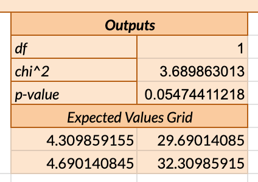
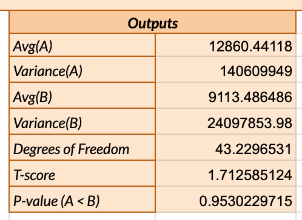
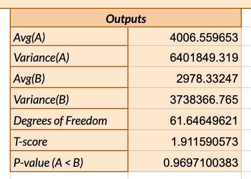

Welcome to Our A/B Test
We conducted an A/B test to see if we could design a webpage that helps users find what they're looking for more quickly. This test compares two versions: the original and a redesigned version focused on improving navigation.
Our Experiment
The experiment involved two versions: Version A (our original page) and Version B (our redesigned page). The goal of Version B was to make it easier for users to find their target quickly. Below are the screenshots of Version A and Version B:

Version A

Version B
Hypotheses
Misclick Rate

Null Hypothesis (H0): The misclick rate is the same for both version A and version B of the webpage.
Alternative Hypothesis (H1): Version B of the webpage has a lower misclick rate than version A.
Reasoning for Alternative Hypothesis: The design changes in version B were intended to make navigation more intuitive, potentially leading to fewer misclicks as users can find their intended targets more easily.
Prediction with Justification: We anticipate rejecting the null hypothesis, as the streamlined design of version B should result in a lower rate of misclicks.
Time on Page

Null Hypothesis (H0): There is no difference in the average time spent on the page between versions A and B.
Alternative Hypothesis (H1): Users spend less time on average on version B of the webpage compared to version A.
Reasoning for Alternative Hypothesis: If version B effectively guides users to their desired actions faster, the average time spent on the page should decrease, reflecting an improvement in usability and efficiency.
Prediction with Justification: We are inclined to reject the null hypothesis, expecting that the design improvements in version B lead to a noticeable reduction in time on page.
Mouse Move Distance

Null Hypothesis (H0): The mouse move distance is the same for users interacting with both version A and version B of the webpage.
Alternative Hypothesis (H1): Version B of the webpage results in a lower mouse move distance than version A.
Reasoning for Alternative Hypothesis: By making the user interface more direct and less cluttered, version B aims to reduce the need for extensive mouse movements, thereby increasing navigation efficiency.
Prediction with Justification: We predict rejecting the null hypothesis, as the improvements in version B are expected to significantly decrease the distance users need to move their mouse to find clickable elements.
Statistical Test
Misclick Rate
Test Choice ＆ Why: The Chi-Squared Test was selected to compare the misclick rates between versions A and B. This test is appropriate for categorical data, like our binary misclick outcomes.
- Chi-Squared Statistic: 3.689863013 indicates the observed data's deviation from the expected if no change had occurred. Closer values to 0 would indicate less deviation.
- Degrees of Freedom (df): 1, a function of the number of categories minus one.
- P-value: 0.05474411218, which is slightly above 0.05, suggests that while there is a trend towards improvement in version B, it is not statistically significant at the 5% level.
Conclusion: Based on the P-value of 0.05474411218, which is more than the standard significance level of 0.05, we fail to reject the null hypothesis, suggesting that the change in misclick rates between versions A and B is not statistically significant.
Time on Page
Test Choice & Why: A One-Tailed T-Test was conducted to assess if version B of the webpage significantly decreases the mouse movement distance, aiming to validate our hypothesis that version B enhances user experience by requiring less navigation effort.
- T-score: 1.712585124, reflecting the direction and magnitude of the difference in means. Positive values indicate version B had lower times on page on average.
- Degrees of Freedom: 43.2296531, calculated from our sample sizes, which impacts the critical value needed for significance.
- P-value (Adjusted for the intended direction, B < A): 1 - 0.9530229715 = 0.0469770285, indicates significant evidence that version B reduces mouse movement compared to version A, supporting our hypothesis.
Conclusion: Based on the adjusted P-value of 0.0469770285, which is less than the standard significance level of 0.05, we find statistically significant evidence that the alternative hypothesis is true, concluding that version B of the webpage significantly improves user experience by reducing navigation effort compared to version A.
Mouse Move Distance
Test Choice ＆ Why: The One-Tailed T-Test was appropriate for assessing whether the redesign in version B resulted in a significant reduction in mouse move distance, suggesting more efficient navigation.
- T-score: 1.911590573, which indicates the difference in means is in favor of version B, suggesting reduced mouse movement.
- Degrees of Freedom: 61.64649621, which affects the distribution used to determine the p-value.
- P-value (After adjusting for the intended direction, B < A): 1−0.9697100383 = 0.0302899617, indicates significant evidence supporting that version B reduces mouse movement compared to version A.
Conclusion: Based on the adjusted P-value of 0.0302899617, which is less than the standard significance level of 0.05, we are confident that the alternative hypothesis is true, providing evidence that version B significantly reduces mouse movement, indicating improved navigation efficiency.
Summary Statistics
In our comparative analysis of user interactions with two versions of a webpage, we meticulously analyzed data from 34 data points for version A and 37 for version B across all metrics, indicating a solid foundation for our statistical conclusions. The analysis revealed a decrease in the average time on page from 12,860 for version A to 9,113 for version B, and in mouse movement distance from 4,007 to 2,978, highlighting version B’s enhanced user experience. The variances for time on page significantly dropped from 140,609,949 in version A to 24,097,853.98 in version B, and for mouse movement, from 6,401,849.319 to 3,738,366.765, indicating more consistent user behavior in version B. These results, supported by a substantial and specific dataset, clearly demonstrate the improvements in efficiency and navigation consistency brought by version B.